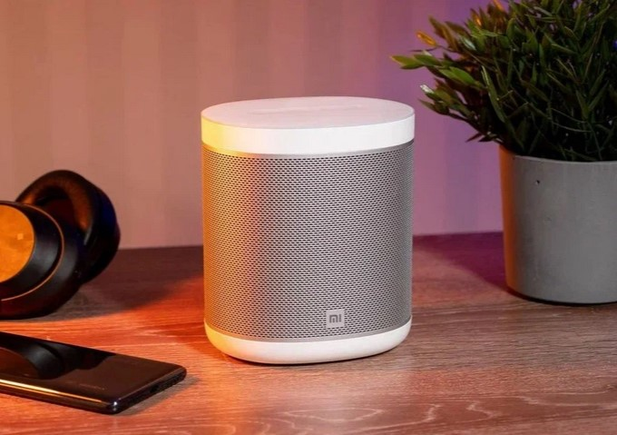
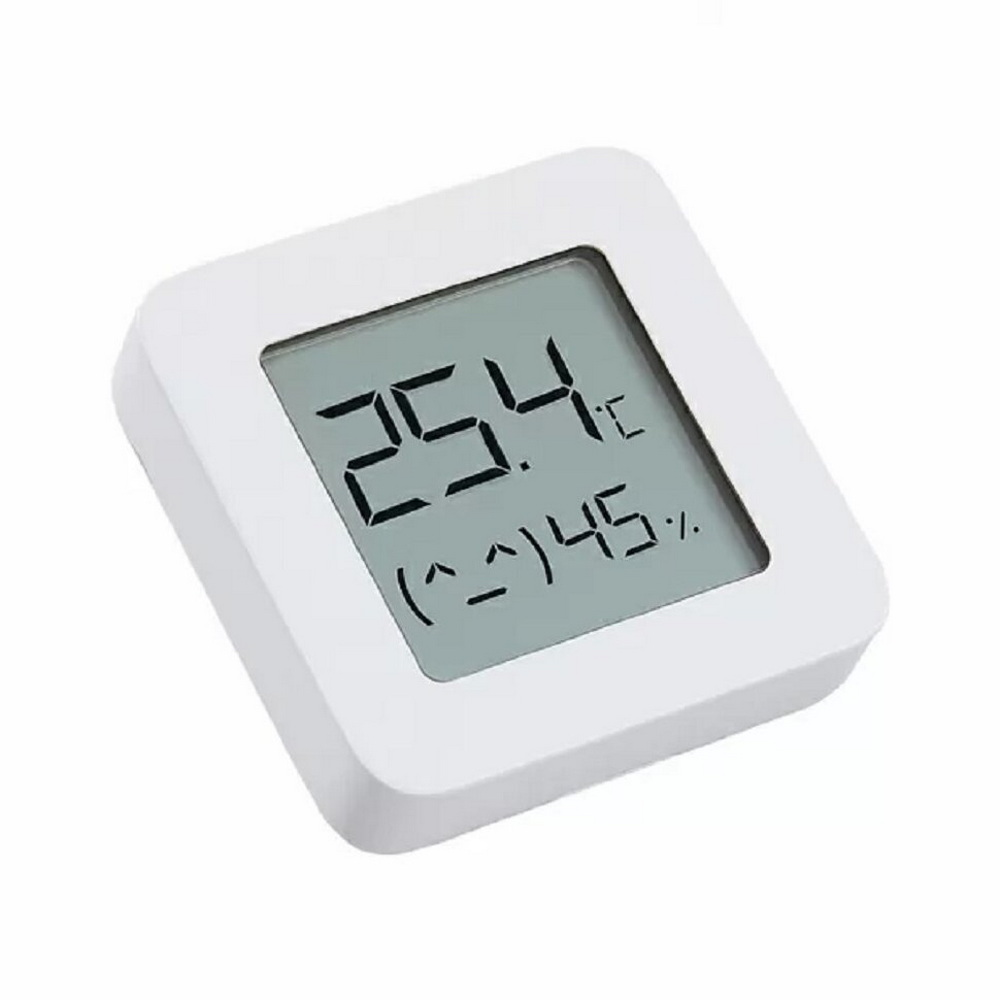

Умная колонка Xiaomi Mi Smart Speaker
|  | Характеристики: Гарантия: 1 год Мощность фронтальных АС: 12 Вт Встроенный модуль Bluetooth: 4.2 Голосовой помощник: «Маруся» Управление с телефона: Есть Встроенный микрофон: Есть Подсветка корпуса: Есть Страна: Китай |
Лаконичный дизайн станции сочетается с широкими возможностями для развлечений и управления другими устройствами. Маруся мгновенно реагирует на голосовые команды. Что вам нужно? Найти интересный фильм по телевизору? Или зажечь лампу? Просто скажите — и «Маруся» мгновенно выполнит просьбу.
Xiaomi Mi Temperature and Humidity Monitor 2
|  | Характеристики: Тип: Датчик температуры и влажности Дополнительные функции: Синхронизация со смартфоном Тип выносного датчика: Беспроводной |
Датчик температуры и влажности Xiaomi Mi Temperature and Humidity Monitor 2 помогает поддерживать комфортный микроклимат в помещении.